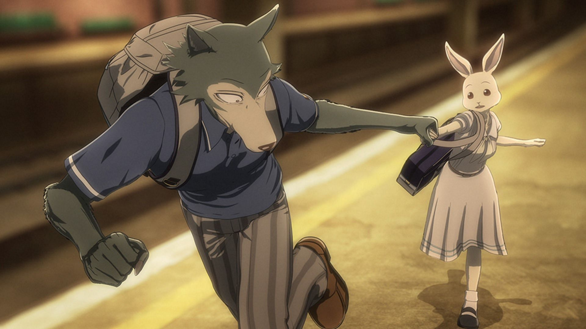

About Legoshi
Legoshi is a socially awkward wolf who keeps to himself. As a carnivore, other students are scared of him, so he tries to seem less imposing.
Legoshi and Haru, his love interest.
Legoshi's Characteristics
- He is very tall
- He is very calm
- He enjoys egg sandwiches
Legoshi's Confidants
Legoshi has a few friends at Cherryton Academy. Jack is very close friends with him, but Haru is his love interest and closer to him. Louis is a sort of rival/friend to him. Click on the links below to see more about them.